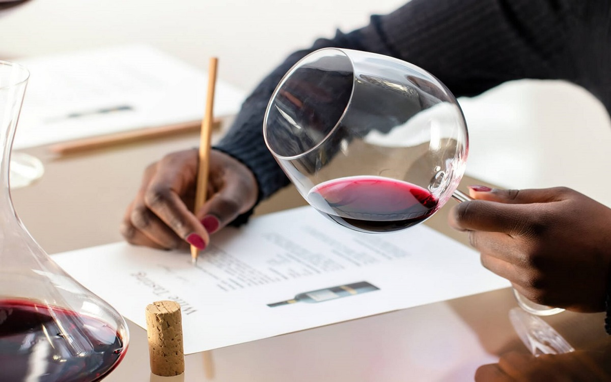
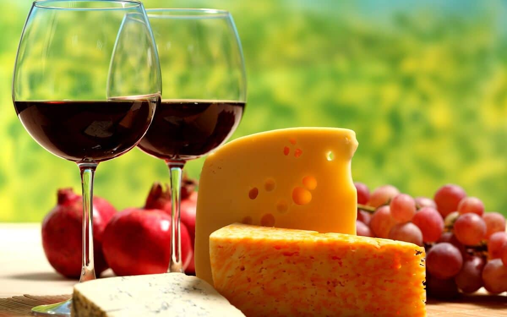
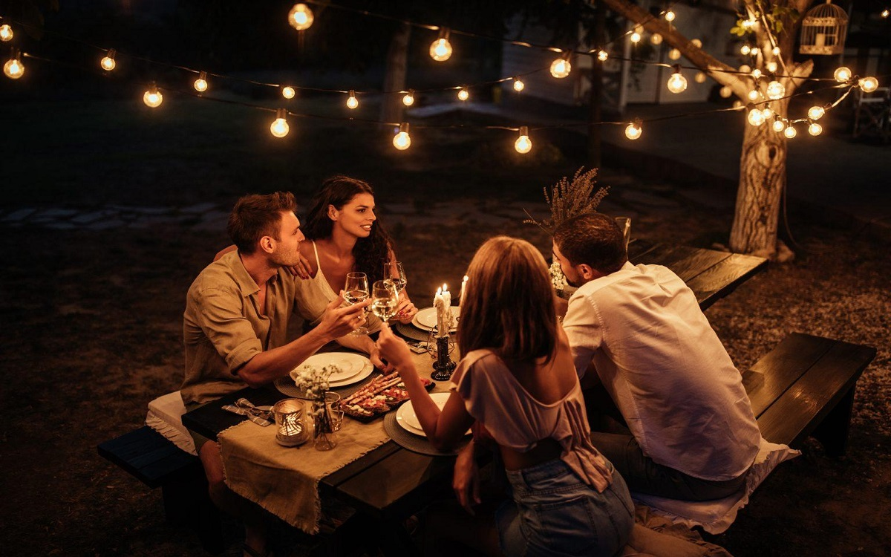

Antes de empezar la Cata...
A diferencia del maridaje del vino y la comida, la cata es un momento de concentración única y exclusiva de contacto. Hoy en día hay muchos cursos donde poder aprender ciertos trucos sobre cómo catar vinos.
Las reglas de maridaje, son claves sobre los efectos que tiene el vino sobre la comida.
De cualquier forma, es bueno empezar paso a paso, viendo como es el proceso del vino.
También es muy importante no tomarse el tema de forma demasiado formal: se trata de aprender, disfrutar y relajarse ante todo.

Las 4 reglas básicas del maridaje
Las reglas básicas del maridaje de vinos se centran en las combinaciones de: acidez, azucares, alcohol, taninos algunas claves sobre los efectos que tiene sobre la comida.
Un vino ácido (blancos, rosados y algunos tintos) puede compensar una comida grasa. También pueden hacer que la comida parezca más salada, y el vino parecerá menos ácidos si se beben con comidas dulces.
Un vino tinto con puede hacer que una comida ligera no tenga sabor a nada, por eso se sugiere acompañarlo con carnes, cocidos, etc.
Un vino dulce va bien con comidas dulces, reforzando ambos los sabores. También puede ir bien con comidas ligeramente saladas.
Un vino tánico (tinto, con sabor fuerte y seco en boca) marida mejor con comidas muy proteicas y grasas.

Disfrutar de un buen vino
Disfrutar de un vino con amigos es una experiencia única que combina el placer de la compañía, con la apreciación de una buena botella. Para empezar, es importante seleccionar el vino adecuado para la ocasión.
Una vez que tengas el vino, asegúrate de servirlo a la temperatura correcta y en las copas apropiadas para realzar sus aromas y sabores.
Al compartir la experiencia de catar el vino, anima a tus amigos a expresar sus impresiones y a disfrutar de la conversación sobre los diferentes matices que perciben.
Recuerda que el vino es un catalizador de momentos memorables, así que relájate, disfruta del momento y brinda por la amistad.